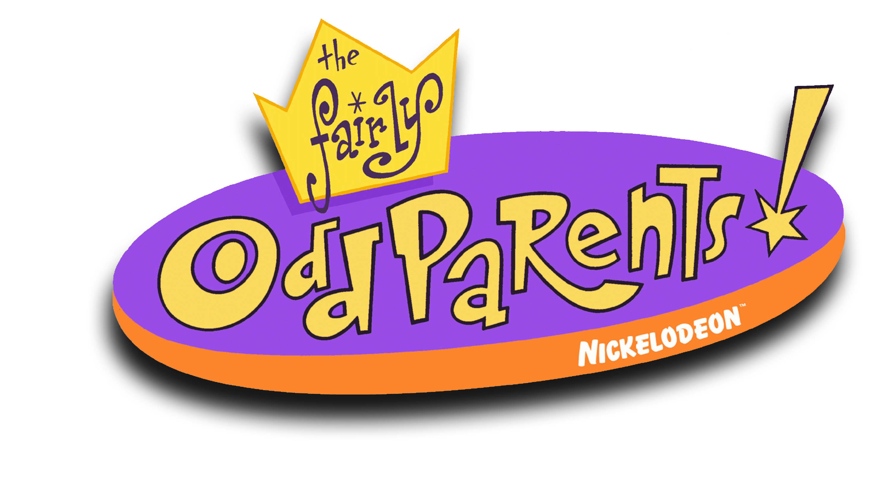

Es el personaje principal de la serie. Es un niño de 10 años que tiene dos padrinos mágicos llamados Cosmo y Wanda. Timmy a menudo usa sus deseos mágicos para resolver problemas en su vida diaria y para tratar de hacer realidad sus sueños. Es un poco egoísta y a veces toma decisiones impulsivas, pero tiene un gran corazón.
Son los padrinos mágicos de Timmy. Cosmo es un hada un poco tonto y torpe, mientras que Wanda es un hada más sabia y seria. Juntos, ayudan a Timmy a hacer realidad sus deseos mágicos y lo protegen de los villanos que quieren robarles a los padrinos.
Son los padrinos mágicos de Timmy. Cosmo es un hada un poco tonto y torpe, mientras que Wanda es un hada más sabia y seria. Juntos, ayudan a Timmy a hacer realidad sus deseos mágicos y lo protegen de los villanos que quieren robarles a los padrinos.
Es la niñera malvada y astuta de Timmy. A menudo trata a Timmy de manera injusta y abusiva, pero Timmy no puede hacer nada al respecto porque los adultos no creen en los padrinos mágicos. Vicky es el principal antagonista humano de la serie.
Barbilla Roja es un superhéroe famoso en la ciudad ficticia de Dimmsdale. Su verdadero nombre es Chip Skylark, y es un cantante pop extremadamente popular y exitoso. A menudo es visto como un ídolo para los niños, especialmente para la enamoradiza Trixie Tang, que es su mayor fan.
Derzel Crocker es el maestro de la escuela primaria de Timmy Turner. Es un hombre de mediana edad con lentes gruesos y una obsesión enfermiza por los padrinos mágicos. Cree firmemente que los padrinos mágicos existen y está obsesionado con encontrarlos y capturarlos para demostrar al mundo que no está loco
Chester es un niño alegre y despreocupado que siempre está buscando aventuras.
es un niño inteligente y racional que a menudo ayuda a Timmy a resolver problemas.

Trixie Tang es una de las estudiantes más populares de la escuela primaria de Timmy Turner. Es conocida por su belleza, riqueza y popularidad, y es admirada por muchos niños, especialmente por Timmy y su amigo Chester.
Es un videojuego basado en la serie animada "Los Padrinos Mágicos". El juego es un juego de ritmo en el que el jugador asume el papel de Timmy Turner y otros personajes de la serie mientras bailan y cantan en varias ubicaciones.
Es un videojuego de acción y aventuras basado en la serie animada "Los Padrinos Mágicos". El juego presenta a Timmy Turner y sus padrinos mágicos, Cosmo y Wanda, en una misión para recuperar las páginas perdidas de un libro mágico conocido como "El Libro de los Deseos".
es un juego de acción y aventura lanzado en 2006 para la consola portátil Nintendo DS. El juego está basado en la serie de televisión del mismo nombre y permite a los jugadores tomar el papel de Jake Long, el personaje principal de la serie.